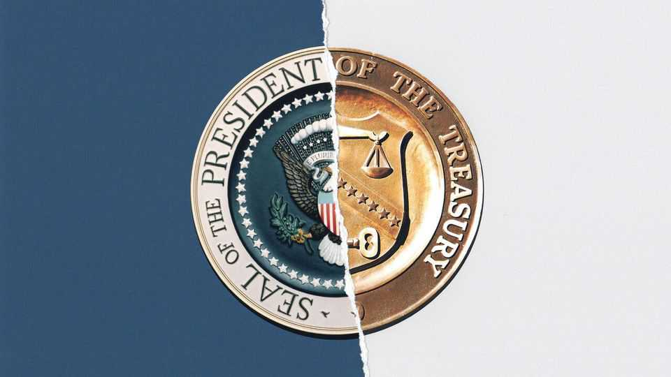

America will regret Scott Bessent’s bond-market misadventures
But expect them to continue, so long as government debt stays high

Aug 27th 2026
The background music of Donald Trump’s second term has been the sound of norms breaking. On economic policy alone, the president has used tariffs to usurp Congress’s taxing powers and launched attack after attack on the independence of the Federal Reserve, which he accuses of keeping interest rates too high. A year and a half into Mr Trump’s second administration, it is tempting to tune the noise out. However, the latest transgression deserves to echo far and wide.
On August 19th Scott Bessent, the treasury secretary, unexpectedly announced that the government would increase the amount of long-dated debt it buys back. The stated reason—to ensure liquidity in the market for long-term Treasury bonds that looked perfectly liquid as things stood—never sounded plausible. From the start the real one appeared to be to keep Mr Trump happy by raising Treasuries’ price and thus lowering their yields, which determine how much Americans pay for a mortgage. Ahead of midterm elections where voters seem poised to punish the president’s Republican Party for stubbornly rising prices, it also looks like politicisation of the world’s most important asset market. Worse, Mr Bessent may not be finished with his meddling.
Bond yields have been creeping up lately, and not just in America. The reasons are not mysterious. Inflation is sticky, budget deficits are widening and government debts are piling up. The day Mr Bessent waded into the bond market America’s total public debt exceeded $40trn, equivalent to more than 120% of GDP. As the rich world’s central bankers arrive in Jackson Hole on August 27th for their annual retreat, they will commiserate with one another.
If Mr Bessent were serious about lowering yields, he would start by tackling this debt bomb, as he and Mr Trump have repeatedly promised. Instead, his department is reportedly weighing whether to use cash from its $1trn general checking account to fund more bond buy-backs. When asked about Mr Bessent’s market interventions, Mr Trump suggested, apparently not in jest, unleashing American troops on the bond vigilantes.
Traders have little to fear from SEAL Team Six. But Mr Bessent’s sortie into the Treasury market does risk bloodying America’s financial credibility, even if it keeps yields a little lower for a little while (as it appears to be doing). Many investors are already feeling nervous. After the surprise buy-back, the dollar weakened and assets that rise with worries about the global reserve currency’s “debasement”, such as gold and bitcoin, surged. A combination of lower yields and a weaker dollar would stoke inflation (unless the Fed acts against Mr Bessent—and angers Mr Trump—by raising short-term interest rates). And the secretary’s purchases could backfire if the market starts demanding extra compensation for holding an asset whose price is seen as reflecting political whim as well as economic reality.
Regrettably, in Mr Trump’s America and elsewhere, politicians and their voters are in no mood for the tax rises and spending cuts that would begin to balance government budgets. Mr Bessent’s stop-gaps look more appealing. Even if his bond purchases do not prevent yields from rising eventually, they may be enough to kick the debt can a little bit further down the road and into the hands of the next administration. In the Wall Street Journal Mr Bessent’s mentor from his years as a hedge-fund trader, Stanley Druckenmiller, called every one-hundredth of a percentage point of yield suppression “a subsidy to procrastination”.
The last time America managed to chip away at unsustainable debt, in the decades after the second world war, it also meddled even as it tightened its belt. The government kept yields low first through an explicit ceiling, then with subtler sorts of financial repression such as Regulation Q, which capped the interest banks could pay to depositors. Meanwhile, bursts of inflation ate away at the real value of government debt. Mr Bessent knows his economic history well; for several years he taught a course on it at Yale University. He surely understands that, sooner or later, the past will catch up with him. ■